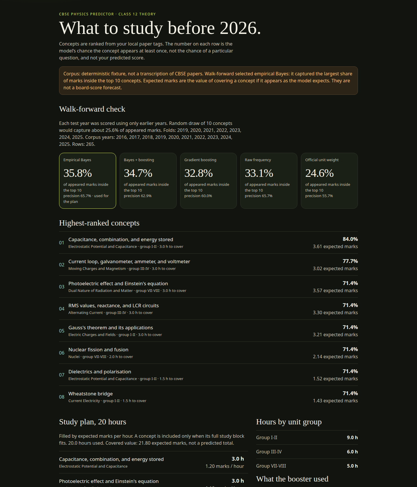
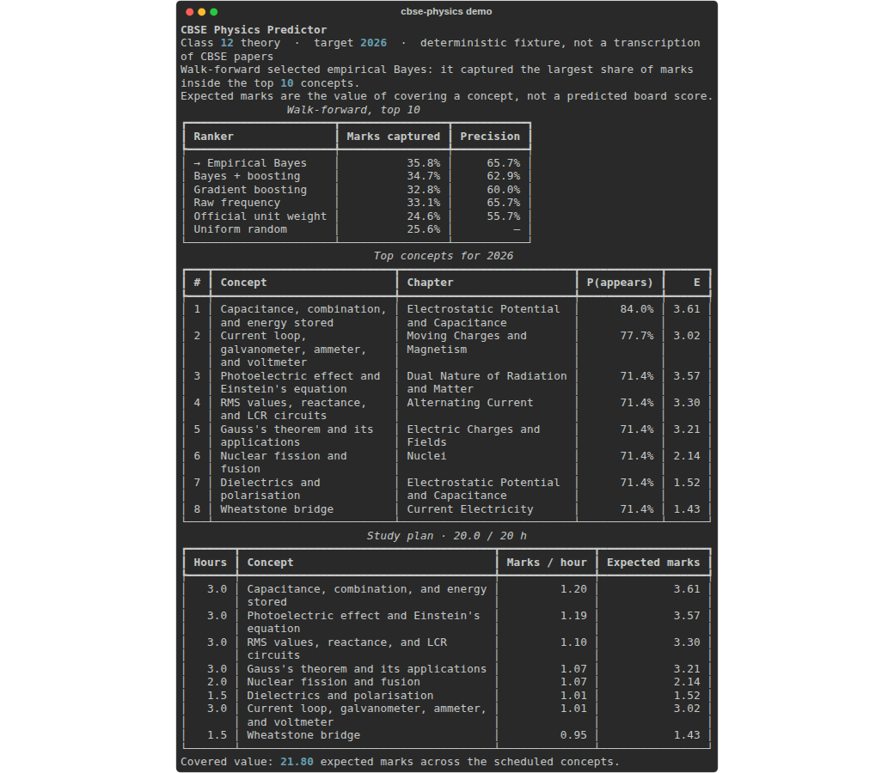

Tag your PDFs
Keyword matching onto 39 NCERT concepts. The corpus stores ids and marks, not the wording of the paper.
CBSE Class 12 Physics · offline
CBSE Physics Predictor ranks NCERT theory concepts from question papers you already have. Empirical Bayes and gradient boosting compete in a walk-forward backtest. The winner becomes an expected-value study plan. It is not a leak, and it is not a predicted score.

cbse-physics demo on the built-in fixture. The fixture is not a transcription of CBSE papers.Keyword matching onto 39 NCERT concepts. The corpus stores ids and marks, not the wording of the paper.
Each past year is scored with only earlier years. On the fixture, Bayes beat boosting: 35.8% of appeared marks in the top 10, versus 25.6% for a random draw.
The plan fills your budget by expected marks per hour. The total is the value of covering those concepts, not your board percentage.
git clone https://github.com/ryaneditraj/cbse-physics-predictor.git
cd cbse-physics-predictor
python -m venv .venv && source .venv/bin/activate
pip install -e .
cbse-physics demoPython 3.11 or newer. No API key. The commands, the curriculum note, and the full FAQ are in the README.

Whether an NCERT concept shows up in a target year, and the marks similar appearances have been worth. Not a question, and not your percentage.
No. Training years are strictly earlier than the year being scored. An unpublished paper is not an input.
No. They are a seeded simulator so the demo runs with nothing to download. Ingest your own PDFs for a plan you might actually follow.
Class 12 Physics theory, NCERT chapters 1–14, using the combined 2025-26 mark groups that total 70. It is not a CBSE or NCERT product.
No. OCR, if you enable it, is a local Tesseract binary. There is no key to configure.